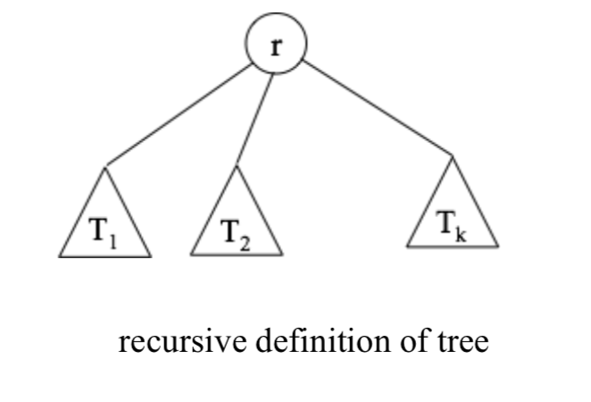
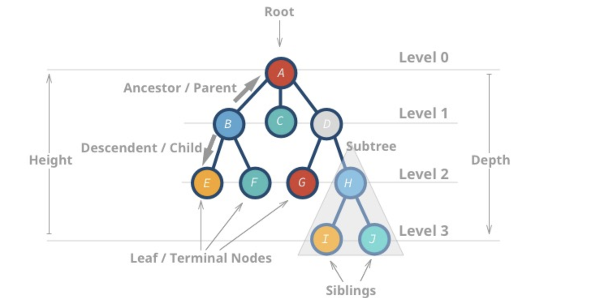

Tree
: 만약 자료들이 계층적인 구조(hierarchical structure)를 가지고있다면, 선형 자료구조는 적절하지 못하다. 트리는 이러한 계층적인 자료를 표현하는데 이용되는 자료구조 이다. 이런 계층적인 구조를 트리라고 부르는 이유는 이러한 구조들이 실제 트리를 거꾸로 엎어놓은 듯 한 모양을 하고있기 때문이다.
1. Definition
- recursive definition : a distinguished node called root and zero or more sub trees(T1,T2,.....Tk). each of whose roots are connected with r by an edge.

2. Terminology
- root : the top-most node
- depth(level) of node : length of the (unique) path from the root to that node.
- sibling : roots of the subtrees have same parent
- degree of node : the number of children it has
- terminal(leaf) node : node of degree 0.
